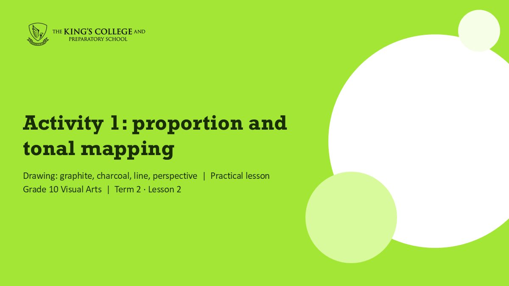

Term 2 · Lesson 2 · Practical lesson
Activity 1: Proportion and Tonal Mapping
Start Here
Today I Will
- Use the basic proportions of the head
- Simplify my photo into three or four flat tones
- Explain what makes a face recognisable
Think first
Where are your eyes on your head: in the top third, or halfway down?
Words to Know
| Word | Meaning |
|---|---|
| Proportion | The size of one part compared with another part or with the whole. |
| Centre line | A light line down the middle of the face that shows which way the head turns. |
| Mapping | Tracing the edges of the shapes of light and shadow on a face. |
| Tonal shape | An area of one value (light, middle or dark) treated as a flat shape. |
| Value scale | A strip showing tones from white to black. |
Slides

Notes
The proportions of the head (egg shape, centre line, eyes halfway, nose and mouth lines, ears); simplifying a side-lit photo into three or four flat tones.
The Proportion Map (Front View)
- Egg and centre line: Draw an egg shape, narrow end down, and a light line down the middle.
- Eyes halfway: The eye line sits halfway between the top of the head and the chin; the face is about five eyes wide.
- Nose: The base of the nose is about halfway between the eye line and the chin.
- Mouth: The line between the lips is about a third of the way from the nose to the chin.
- Ears: The ears sit between the eyebrow line and the base of the nose.
Mapping Tones
- Squint: Half-close your eyes until the photo becomes a few big shapes.
- Choose the values: Decide on three or four values: white, light grey, dark grey, dark.
- Trace the edges: Trace the edges of each tonal shape, not the outline of the features.
- Fill flat: Fill each shape evenly with its value, from light to dark.
Remember
The eyes sit halfway; light and shadow carry the likeness.
Practical
You need: Printed side-lit photo, tracing paper, HB and 4B pencils, masking tape, ruler, VJ
Activity 1: Proportion and Tonal Mapping
- Draw the proportion map of a head in front view in your VJ, labelling each guideline.
- Tape tracing paper over your photo.
- Squint and trace the edges of three or four tonal shapes.
- Fill each shape flat with one value and add a small value scale beside it.
- Paste the tracing and the photo side by side in your VJ.
- Annotate: what did you leave out, and what still makes the face recognisable?
Test Yourself
- Where are the eyes on an average head, front view?
- What does mapping a face mean?
- Why do we squint at the photo?
Show answers
1. About halfway between the top of the head and the chin. 2. Tracing the edges of the shapes of light and shadow. 3. To see the big shapes of tone instead of the details.
Finished Early?
Measure a real face
Test the rules on a real person.
- With a partner's permission, measure their head with a pencil at arm's length.
- Check: are the eyes halfway?
- Check: is the face about five eyes wide?
- Note one way your partner differs from the average.